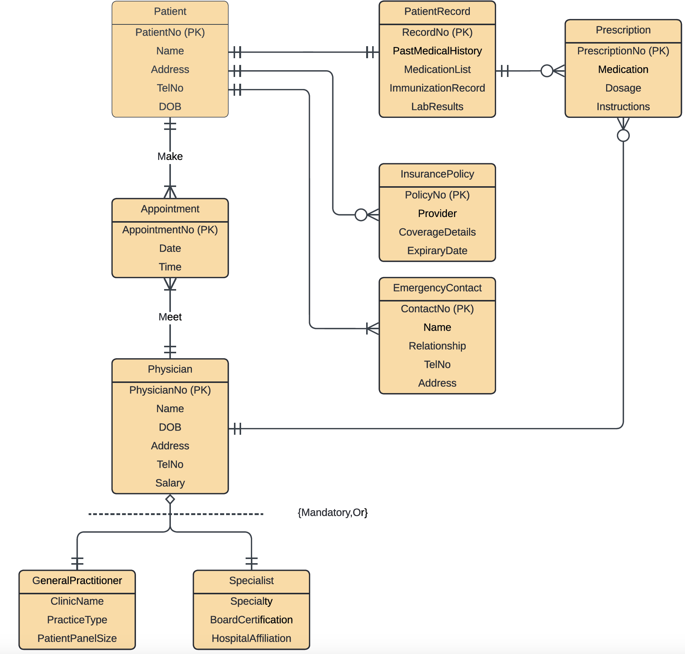
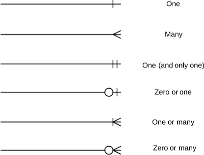
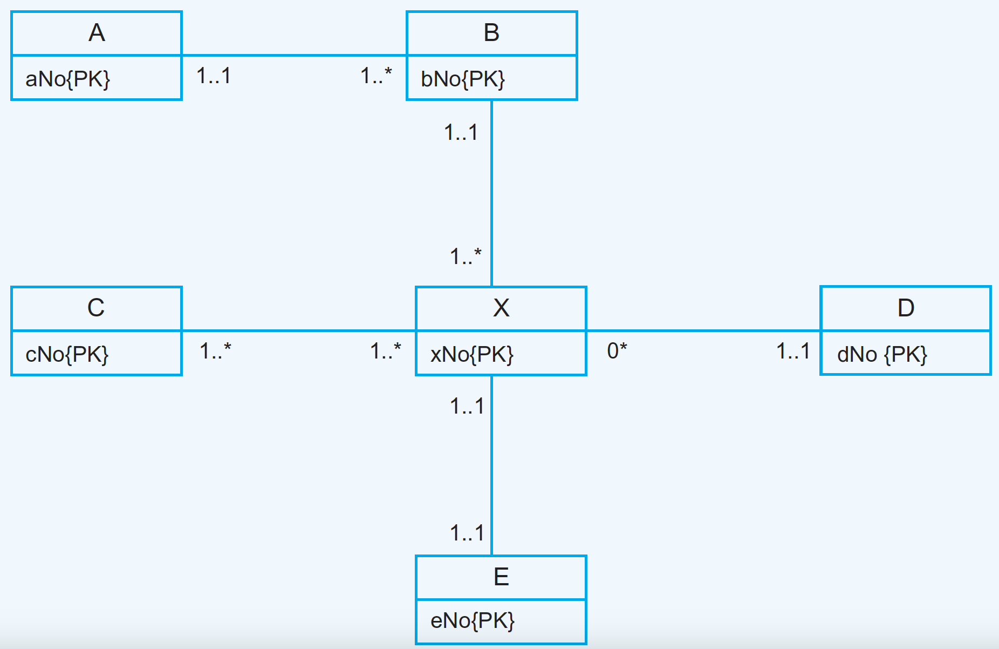

In this lab, you will revisit concepts related to ER modelling as well as the relational model. More importantly, you will practice the mapping rules to transition from an ER to a relational model.
This lab is individual. You have two weeks to work on this lab.
Consider the following patient view of an ER diagram. Note that the diagram uses Crow's foot notation to express multiplicities in the relationships. A legend of the notation is shown below.


Below are examples of queries required by the Patient user views.
1. First, you need to validate the model against the required transactions by describing the pathway taken by each transaction in the ER diagram. If there is no pathway to satisfy a transaction, explain the design modification(s) required to be able to obtain the information.
2. Second, convert the patient view of the ER diagram into the corresponding relational model (i.e. logical design). You must indicate the tables, their attributes, the primary keys as well as the foreign keys. See slides 30 and 31 for examples of presenting the logical design (or consult Chap 17 in Connolly textbook). Clearly indicate in the report the rationale used to identify the list of entities, and how relationships are captured by the relational model and why.
The ER diagram shown below shows only entities and primary key attributes. The absence of recognizable named entities or relationships is to emphasize the rule-based nature of the mapping rules described in the lecture about logical database design (i.e. Step 2.1 - summarized on slide 18).

Answer the following questions with reference to how the ER model maps to relational tables.
Merge the local data models to create a global logical data model of the following University Case Study. State any assumptions necessary to support your design.
This case study involves a university system that maintains separate data models for undergraduate and graduate students. The task is to merge the local data models to create a global logical data model that covers all aspects of the university's academic records, faculty, and research funding. Explain all your decisions.
| StudentID (PK) | Name | EnrollmentYear | Major | AdvisorID (FK) |
|---|
| FacultyID (PK) | Name | Department | OfficeNumber |
|---|
| StudentID (FK) | CourseID (FK) | Semester | Grade |
|---|
| CourseID (PK) | Title | Department | Credits |
|---|
| StudentID (PK) | Name | EnrollmentYear | ResearchArea | SupervisorID (FK) |
|---|
| ThesisID (PK) | Title | Abstract | DefenseDate | StudentID (FK) |
|---|
| FacultyID (PK) | Name | Department | OfficeNumber | ResearchInterest |
|---|
| GrantID (PK) | Topic | Amount | StartDate | EndDate | FacultyID (FK) |
|---|
Include all your answers in the report. Any diagrams/tables used must be clear, and design decision should be properly justified to get the full mark.
Submit the report in PDF format to Moodle by Thursday, February 8th, 2024 at 11:59pm.